CapitaReward: One Loyalty Program for Restaurants, Hotels and Event Venues
CapitaReward is a loyalty program shared by a group of restaurants, hotels and event venues. Members collect points wherever they spend and use them anywhere in the group: earn over dinner, spend on a hotel night.
Over six months I designed both sides of it: the dashboard venue staff use every day to manage bookings, members and rewards, and the mobile app members use to check their points. The hard part was making one system work for businesses that run in completely different ways.
My Role
Product Designer (UI/UX)
What I worked on
- The structure of the admin dashboard
- How venues, staff and permissions fit together
- Points, rewards and vouchers
- Reservations and bookings
- Reports and analytics
- The member mobile app
- One design system shared by both products
- Tables, forms and empty states for a lot of data
Goals
I had to design for two very different people without ending up with two disconnected products.
The platform needed to be
- Fast and dense enough for staff who use it all day
- Simple and rewarding for members who open it now and then
- Flexible enough for restaurants, hotels and event venues
- Consistent, so points mean the same thing everywhere
- Able to welcome new venues without a redesign
One system with two faces, not one product built twice.
Background
CapitaReward runs loyalty for a group of venues, not for a single business.
Each venue runs on its own, with its own staff, promotions and reservations, but members move freely between them. Someone can earn points over dinner at a restaurant, spend them on a hotel stay and redeem a voucher at an event, all with one membership.
That shared membership is the whole point, and it only works if every kind of venue feels equally at home in the system.
The platform covers
- Adding and managing venues
- Member profiles and point balances
- Reservations and bookings
- Loyalty rewards and point rules
- Staff accounts and permissions per venue
- Promotions, vouchers and events
- Reviews and customer feedback
- Venue-specific services, like bottle keeping
- Reports across the whole network
I designed both sides: the operator dashboard, and the member app that draws from it.
Problem
A restaurant, a hotel and an event venue think about their business in completely different ways.
A restaurant thinks in tables, guests and tonight. A hotel thinks in rooms, nights and months ahead. An event venue thinks in dates, capacity and ticket types. They don't even agree on what a "booking" is.
Most loyalty tools solve this by focusing on one industry. CapitaReward couldn't, because the shared membership across all of them was the whole idea.
So several problems landed at once
- One interface had to fit operations that barely overlap
- Points needed one meaning across very different purchases
- Staff roles varied a lot from venue to venue
- Some services only existed for a handful of venues
- Members needed one clear view of all of it
Designing for the average venue would have produced a system that fit none of them.
Before vs After
Solution
Instead of designing per venue type, I built the dashboard around what every venue shares.
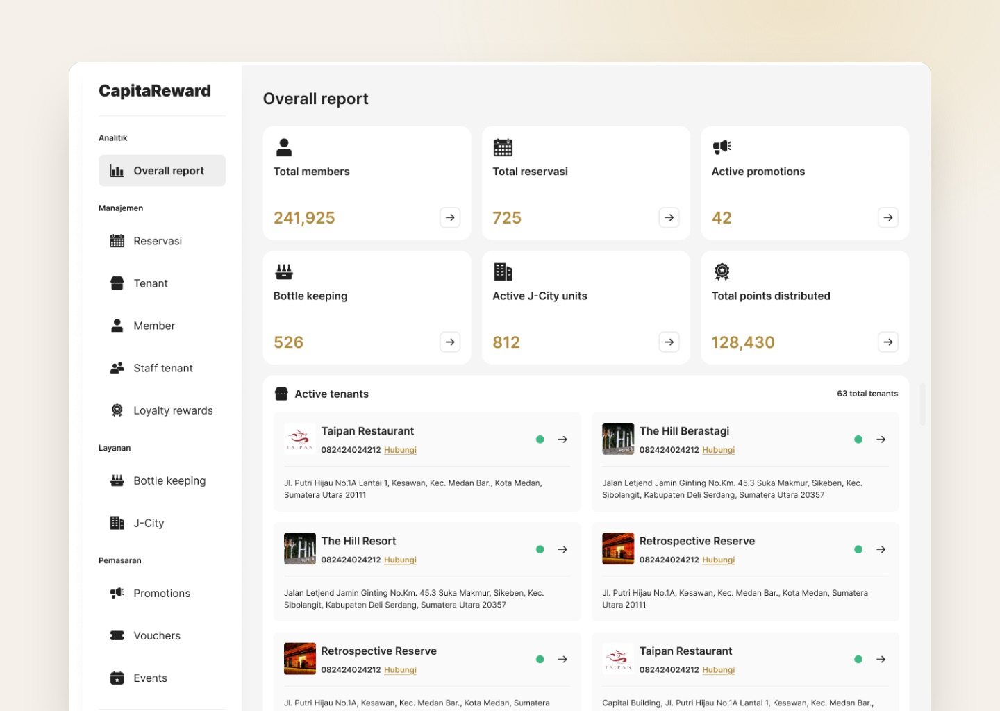
Then I treated the differences as modules that only appear where they apply, and grouped the menu by what staff are trying to do, not by feature.
The four groups
- Analytics: the overall report, opening on the numbers that matter across the network
- Management: reservations, venues, members, staff and rewards, the daily core of the job
- Services: venue-specific modules like bottle keeping, shown only to the venues that use them
- Marketing: promotions, vouchers and events, everything that brings members back
The home screen answers an operator's first question before they ask it. Total members, reservations, active promotions and points given out sit in one row at the top, and each one opens the section behind it. Below that, a list shows which venues are open right now.
The member app is the same data turned inside out. The dashboard is dense and built for daily work. The app is simple and built for quick visits: one balance, nearby venues, available rewards, and whatever you've booked next.
Grouping by purpose meant a new kind of venue could be added as a module, not as a new part of the interface.
Discovery
I started by looking at how each type of venue actually works, day to day.
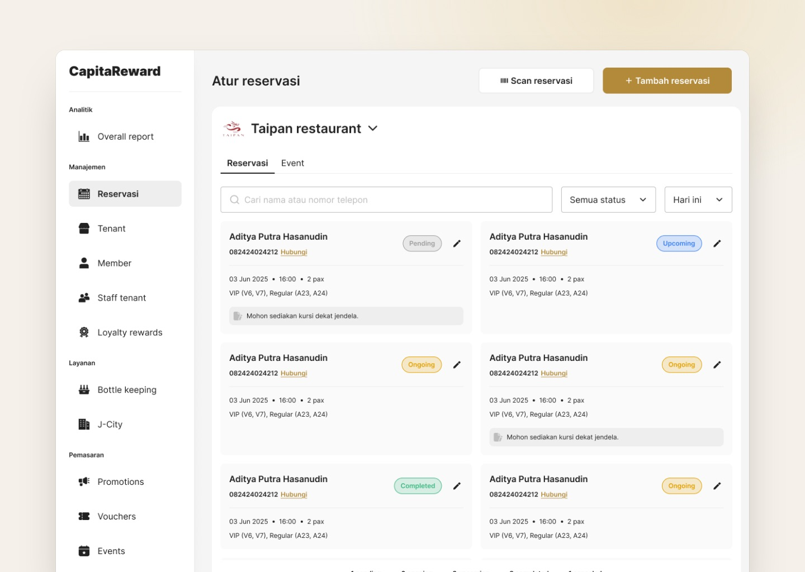
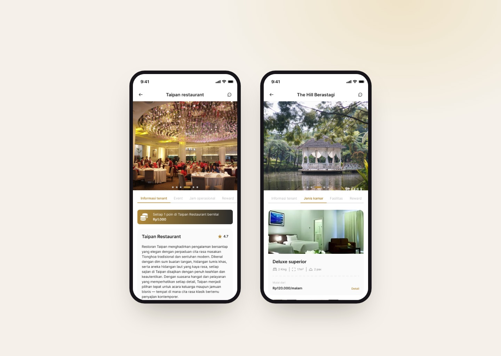
I looked closely at
- How reservations differ between restaurants, hotels and event venues
- Who uses the system, and how often
- Where staff still fall back on paper or spreadsheets
- How existing loyalty programs set their point rules
- What members actually check before a visit
A few things became clear early
- Staff care about speed, not features
- Most of their time is spent on just a few screens
- Venue differences live in the details, not the structure
- Members care about their balance and what it unlocks, and little else
My biggest realisation was that the venues are far less different than they look. Underneath the different words, they all manage the same four things: a customer, a time slot, a transaction and a reward.
That one idea turned an impossible list of requirements into a single model with variations.
Competitor Research
Single-venue loyalty apps
- Tailored closely to one business type
- Simple onboarding for staff
- Focused, uncluttered member experience
- Points trapped inside one venue
- No shared membership value
- Each new venue means another app
POS-attached loyalty
- Points earned automatically at checkout
- Already embedded in daily operations
- Reliable transaction data
- Loyalty limited by what the POS supports
- Weak tooling for promotions and events
- Little room for a branded member experience
Enterprise CRM suites
- Highly configurable rules and segments
- Deep reporting capability
- Scales to large networks
- Far too heavy for venue staff
- Long setup and training overhead
- Built for marketers, not operators
Research
I focused on the staff side, because that's where a system either saves time or quietly wastes it.
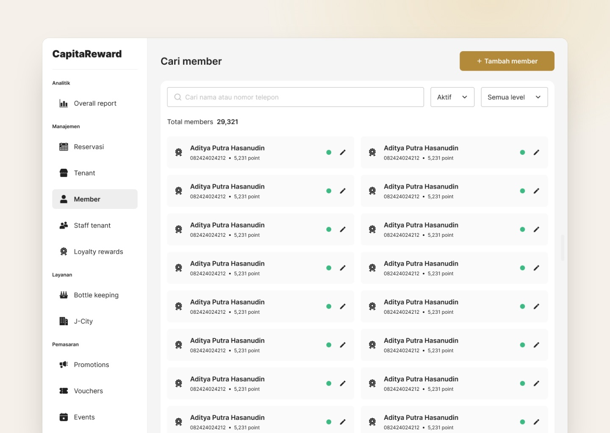
What I noticed
- Staff work in short bursts between serving customers
- Search and filters matter more than deep menus
- Most records are read far more often than they're edited
- Confusing permissions cause more support requests than bugs
- Operators trust numbers they can click into, not summaries
The member side was simpler. People open a loyalty app with one question in mind: what do I have, and what can I get with it? Anything that slows that answer down costs engagement.
The dashboard had to reward familiarity. The app had to reward a ten-second visit.
Challenges
The hardest problem was scope.
Venues, members, staff, reservations, loyalty rules, promotions, vouchers, events, reviews and service modules all had to live together, without the sidebar turning into an endless list.
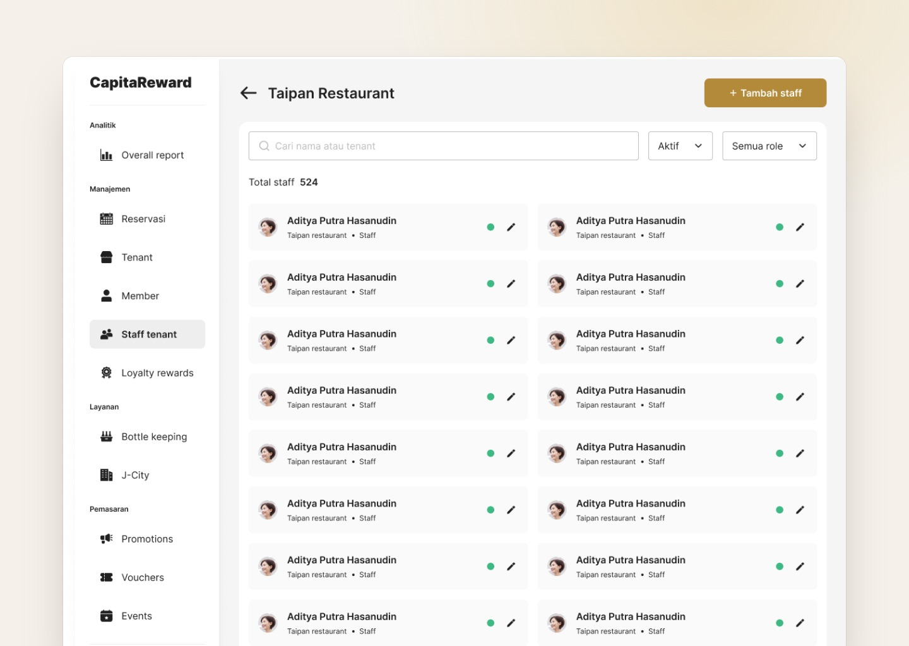
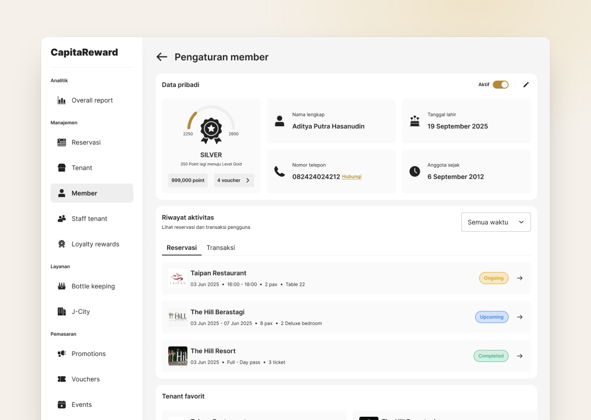
Other things I had to balance
- Showing venue-specific modules without the interface feeling different from venue to venue
- Making permissions obvious, instead of something staff discover by making a mistake
- Keeping big tables readable when records run into the hundreds of thousands
- Keeping the dashboard and the app in one visual language, even though they hold very different amounts of detail
Almost every decision came back to one question: does every venue share this, or does it belong to one?
Exploration
I tried several structures before settling on how the dashboard should be organised.
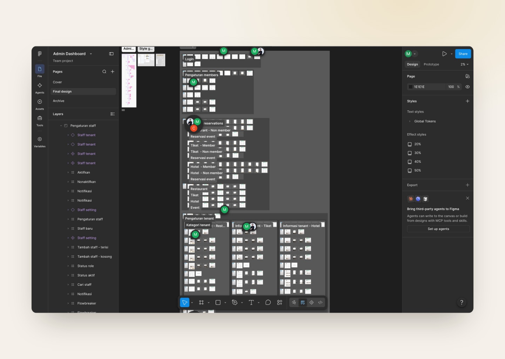
Grouping by task was the decision that made everything after it simpler.
Design System
With this many modules, the system mattered more than any individual screen.
Nearly every section turned out to be a variation of a small set of patterns, so I designed those patterns once and reused them everywhere.
This included
- One list, filter and detail template for every module
- Reusable number cards that always open the same way
- Standard forms, checks and confirmations
- One set of status labels for venues, members and bookings
- Empty, loading and no-permission states
- Shared colors, type and spacing across the dashboard and the app
Once the patterns were set, adding a module became a setup task rather than a design project.
Design
The final design keeps the dashboard calm despite how much it holds, and keeps the app focused on the one thing members come for.
Key decisions
- A grouped sidebar with clear section labels
- A home screen led by key numbers that double as navigation
- Open venues shown right on the home screen
- The same record layout in every module
- Color used only for status and emphasis
- An app built around your balance, nearby venues and rewards
A system this broad only stays usable if every screen behaves the way the last one did.
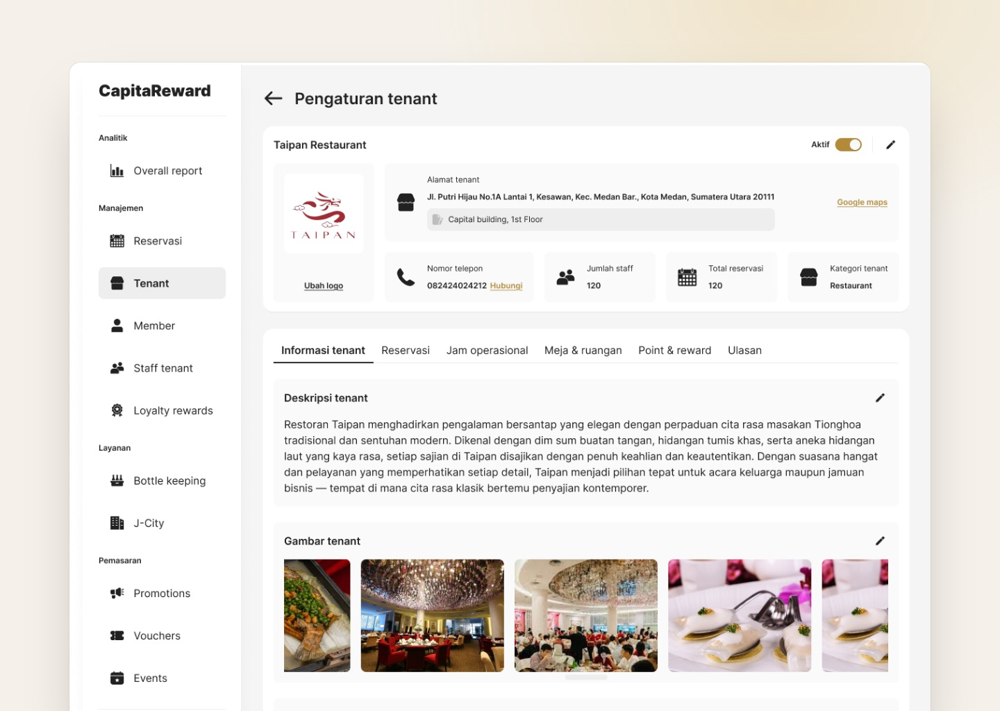
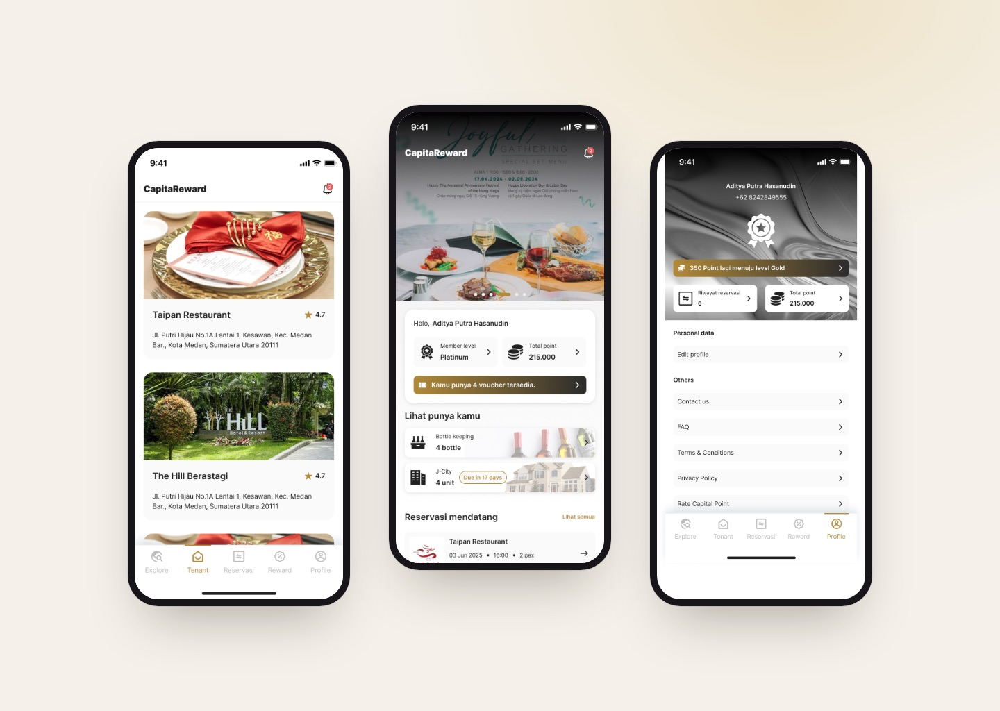
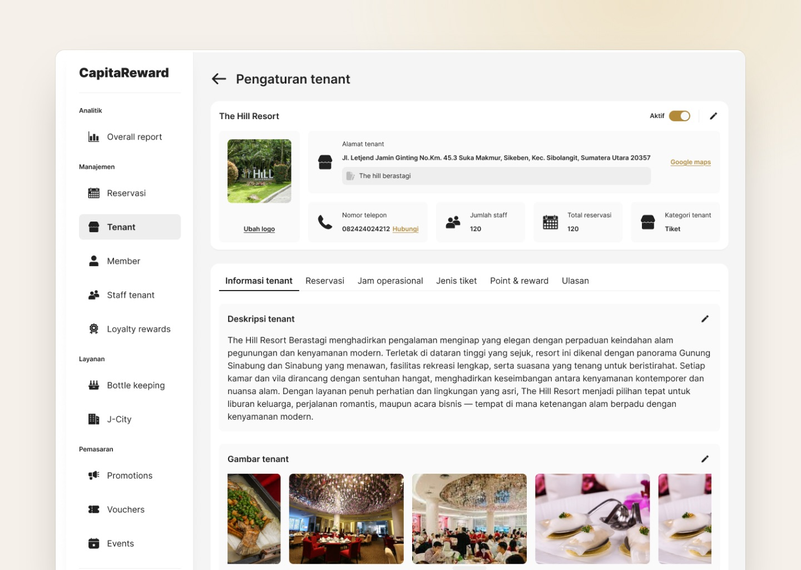
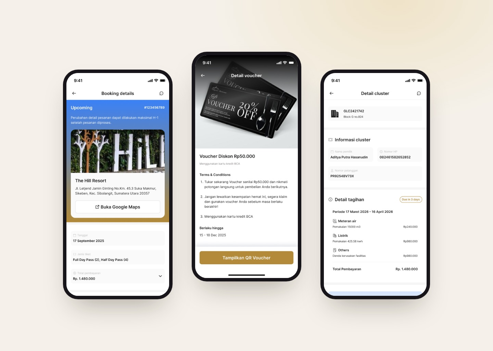
Outcome
A group of very different venues now runs as one loyalty network, without any of them having to work the way another does.
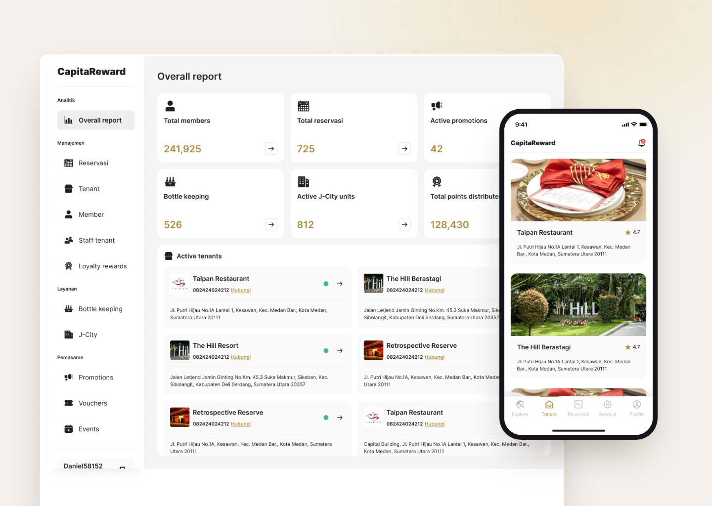
Operators manage their own venue through an interface that only shows what applies to them, while the group gets one view across every venue, member and point issued. Members get the part that matters most to them: one membership that works everywhere.
Thanks to the modular structure, adding a new type of venue became an operational task, not a design one.
Key Takeaways
CapitaReward taught me that the hardest part of a big system isn't adding everything it needs. It's finding the small structure that can hold all of it.
The requirements arrived as a long list: venues, members, staff, reservations, loyalty, promotions, vouchers, events, reviews. Designing that list one item at a time would have produced a bloated interface. The work that mattered was looking underneath it and seeing that almost every module is the same few patterns with different names.
Designing for two opposite audiences at once was the other big lesson. Staff want density, speed and the same layout every time. Members want one answer in a few seconds. Both come from the same data and had to feel like the same product, so they share a system but deliberately not a layout.
It also changed how I handle requirements. Restaurants, hotels and event spaces described their needs in completely different words, and taking those words literally would have split the product apart. The useful skill was translating each one back into a shared model.
What I took away
- Finding the shared model beneath different requirements
- Designing modules instead of screens
- Matching detail to how often a tool is used
- Making permissions clear up front
- Keeping a wide system manageable through consistency